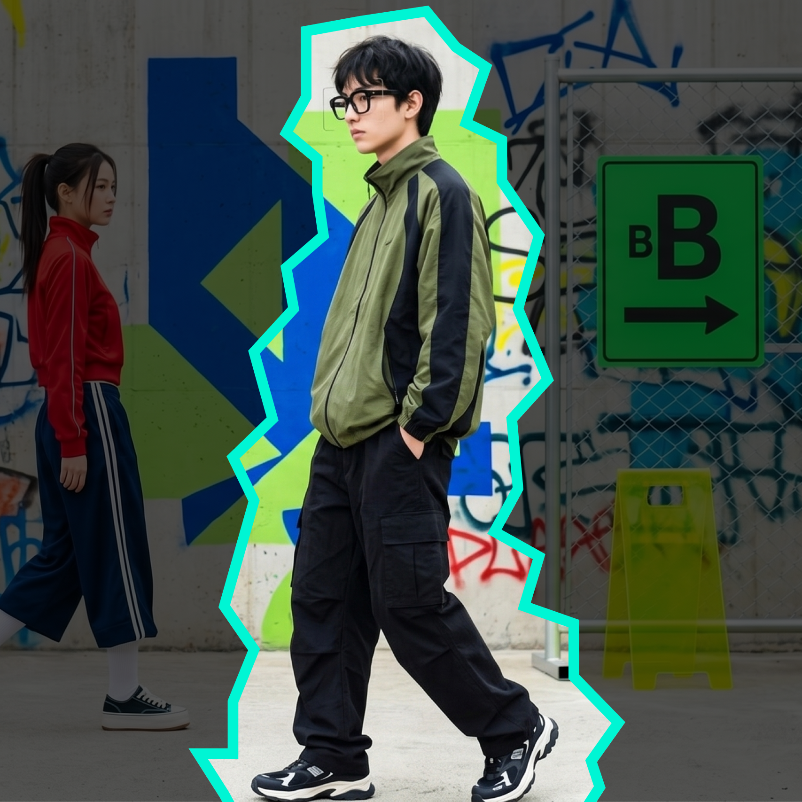
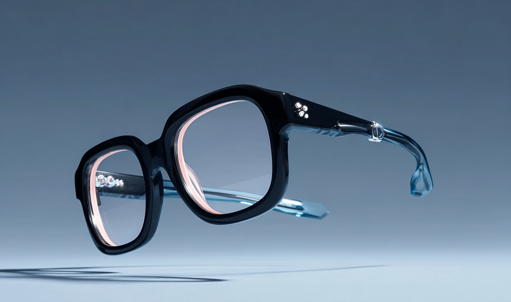

IN-Sider. 당신의 관계를 레벨업합니다.

병철은 4년째 같은 강의실 맨 뒷자리에 앉았다.
아는 사람은 없었다.
말을 거는 법을 몰랐던 게 아니다.
언제, 누구에게, 어떻게 해야 하는지
몰랐을 뿐이다.
IN-Sider를 착용한 첫날,
그에게 23개의 미션이 주어졌다.
47일 후, 그는 처음으로 누군가의 생일을 기억했다.
89일 후, 그는 처음으로 파티에 초대받았다.
127일 후, 그는 자신이 달라진 것을 느꼈다.
인간관계는 스킬이다. 스킬은 데이터로 만들어진다.
IN-Sider
그는 귀신같이 내 취향을 알았다.
내가 좋아하는 밴드.
즐겨 마시는 음료.
나의 사소한 고민과 기분까지.
딱히 말한 적 없는 것들이었다.
그는 내 머릿속을 들여다보는 것 같았다.
처음엔 신기했다.
두 번째엔 설렜다.
세 번째엔 운명같았다.
운명도, 우연도 아니다.
IN-Sider

우리는 당신보다 당신 주변을 더 잘 압니다.
만나기 전부터 준비합니다.
대화하는 동안 함께합니다.
관계가 식을 틈을 주지 않습니다.
당신이 잠든 사이에도
IN-Sider는 일하고 있어요.
내일 아침,
어제보다 나은 관계가
기다리고 있을 겁니다.
만나기 전에 이미 알고 있어요.
그가 어떤 사람인지, 나에게 도움이 되는 사람인지.
5가지 다중 경로를 통해 상대방의 소셜 인덱스를 포함한 모든 정보를 수집합니다.
상대방이 요즘 빠진 것. 대화가 통하는 포인트. 지금 어떤 기분인지까지.
첫 마디를 틀린 적 없는 사람처럼 당신도 그렇게 될 수 있어요.
"처음 만난 사람인데
10년 지기처럼 대화했어요.
상대방이 더 신기해하더라고요."
대화가 막힐 걱정 없어요.
침묵이 흐르는 순간, 디바이스가 실시간 대화 내비게이션을 가동합니다.
타깃의 표정과 동공을 실시간 분석하고 데이터를 기반으로
최적의 화제, 발화 타이밍, 음성 톤까지 그때그때 알려드리니까요.
당신은 그냥 자연스럽게 말하기만 하면 됩니다.
"소개팅 세 번 다 성공했어요.
뭔가 달라진 건 없는데
왜인지 대화가 잘 풀리더라고요."
인간관계를 유지하는 데 드는 막대한 에너지와 감정적 비용을 0으로 만드세요.
연락 타이밍, 안부 메시지, 잊지 말아야 할 것들.
IN-Sider가 챙겨드립니다.
IN-Sider PREMIUM은 상대방과의 모든 관계망 프로세스를
백그라운드에서 자동 집행합니다.
당신이 전혀 신경 쓰지 않는 순간에도, 디바이스는 당신을 '지구상에서 가장 완벽한 사람'으로 출력해 드립니다.
"바쁜데 연락 잘 한다고
다들 그러더라고요.
IN-Sider 덕분이죠 뭐."
IN-Sider는 매일 당신의 현재 위치를 알려줍니다.
올라가는 숫자만큼 달라지는 일상을 경험해보세요.
어디까지 올라갈 수 있을까요?